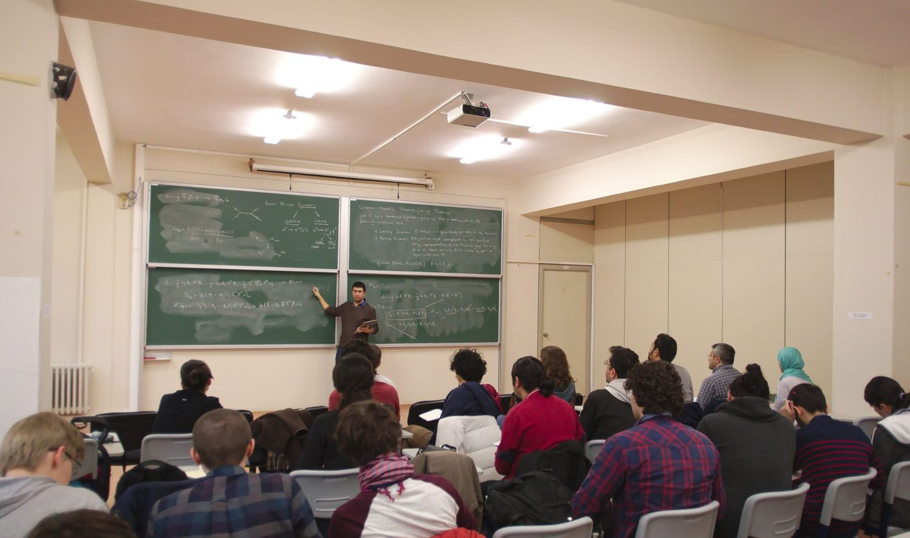

Carrollian physics and supersymmetry
Carroll contractions (c → 0) of supersymmetry algebras, magnetic Carroll superalgebras, and the field theories that realize them.
Professor of Physics, Istanbul Technical University
I am a theoretical physicist working at the interface of gravity, supersymmetry, and quantum field theory. My research focuses on supergravity, higher-derivative theories, Carrollian physics, three-dimensional gravity, and holography.
I am also interested in how AI can be incorporated into theoretical-physics research without giving up control of the underlying calculations and scientific reasoning. I am developing an AI-assisted environment for supergravity calculations that combines symbolic computation, code, and step-by-step analytical work, and I will post more about it here in due course.
Carroll contractions (c → 0) of supersymmetry algebras, magnetic Carroll superalgebras, and the field theories that realize them.
Superconformal tensor calculus, higher-derivative invariants in five and six dimensions, and their matter couplings.
Chern–Simons-like formulations of massive 3D gravity, and non-relativistic (super)gravity in three dimensions.
An AI-assisted environment for supergravity calculations that combines symbolic computation, code and step-by-step analytic work, with the physicist in control of the reasoning.

Students and researchers at ITU working on Carroll symmetry, supersymmetry and supergravity.
Meet the group
This term I am teaching Theory of Groups in Physics and Physics I: Mechanics at ITU. Each course has its own page with notes, readings and quizzes.
Go to the courses